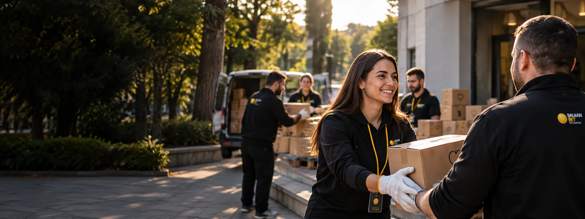
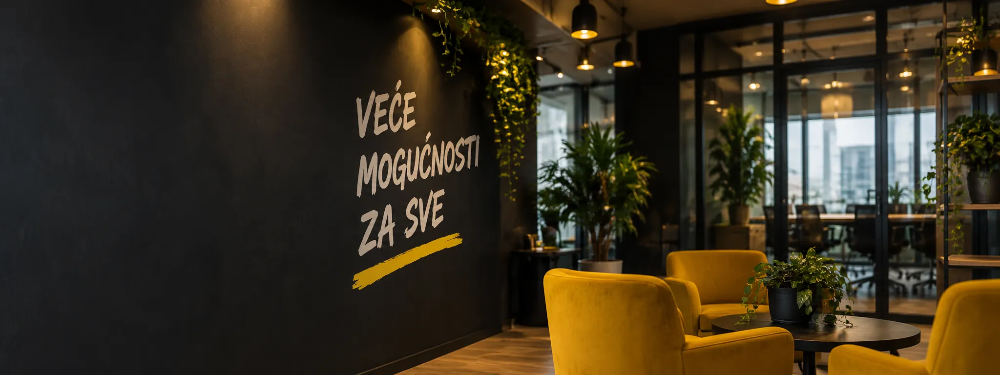

Podrška sportu
Stvaramo prostor za talenat, trud i timski duh — od Olimpijskog tima Srbije do lokalnih klubova i takmičenja.
Saznaj više
Uz sport, zdravstvo i zajednicu. Dela koja povezuju ljude i pokreću promene.
Partnerstvo započeto 2023. godine. Podrška posvećenosti, timskom duhu i vrhunskim rezultatima.
Pogledaj šta smo uradiliČetiri oblasti u kojima naš odnos pravi razliku.
Razvoj i podrška.
Jednake prilike.
Briga o dobrobiti.
Lokalne inicijative.
Sport i zdravstvo.
Solidarnost.
Informisanje i prevencija.
Odgovorno igranje.
Pristup podršci.
Poverenje i transparentnost.
Otvorena saradnja.
Zajednički standardi.
Svaki projekat počinje stvarnom potrebom.
Stvaramo prostor za talenat, trud i timski duh — od Olimpijskog tima Srbije do lokalnih klubova i takmičenja.
Saznaj više10 miliona dinara
Za ustanove koje se bave kardiovaskularnim zdravljem.
Saznaj višePomoć koja odgovara na potrebe ljudi. Podrška dostojanstvu i jednakim prilikama — kroz Ligu dobrih dela i lokalne akcije.
Saznaj više
Kontaktiraj nas. Razgovaramo o saradnji.
Javljamo ti se u najkraćem roku.